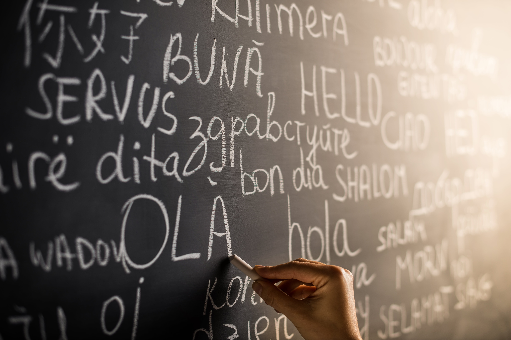

Иностранные языки
Разбираясь в данной теме я опрасила студенткой, который проводит практические занятия с подрастками. Вот такие советы она дала:
Как мы знаем, лучше всего изучать язык самостоятельно - это и есть самообразование.
Рассмотрим полезный материал для самообразования по англискому языку:
Ресурс: Лингвалео. Очень удобный и полезный сайт с удобными тренировками.
Из учебников могу посоветовать все учебники Мерфи (там очень удобно подается грамматика)
https://englishfrench.academy/wp-content/uploads/2020/09/235_7-English-Grammar-in-Use.-Murphy-R.-2019-5th-394p-.pdf
